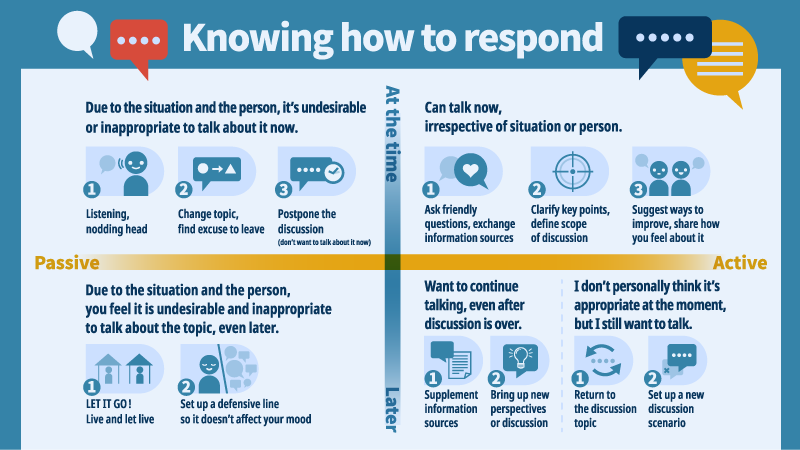

To effectively achieve your goals, you have to tailor your approach to the situation when disinformation enters a discussion. These five steps and the subsequent framework will help you prepare and adjust to tackle the problem on your terms.
Step 1｜Understanding the other person
Each individual has a unique background and life story, and therefore their own set of values. Understanding the type of person you are talking to will make it easier to find the most appropriate way of engaging them in conversation.
Start by building a picture of their background:
What kind of person are they? What’s their personality like? What core values do they hold? What is their political stance? What are their social milieu and workplace environments like? What do they tend to talk about with their friends and peers?
Look again at your relationship:
What is the atmosphere generally like when you meet? How often do you see each other for a chat? How important is that person to you?
Finally, observe how the person approaches and deals with “information”:
Does the person tend to obtain information actively, for example by searching online about topics they are interested in, or passively, e.g. by listening to TV news? When they receive new information, to what degree do they take it on board? If the information is suspect, will they mention these concerns or try to verify them?
Step 2｜Judging the context
Conversations in a social media group are different to those held during a company dinner. Below is a quick take on the advantages and disadvantages of different contexts and settings when seeking to sustain a dialogue:
1. Online platforms (communication software, social media sites, media websites, discussion forums, news)
Common media : Text, images, audio, video (consider the pros and cons of each).
Pros : The exchange will be recorded, making it convenient to go back and review or continue the discussion; information is recorded and there is more time to respond.
Cons: : Having many people in the conversation makes it easier to lose focus, go off topic, or prevent people from speaking their mind; algorithms tend to lead to tunnel vision.
2. Real-time situations (one-on-one, private gatherings, the workplace, public areas)
Common media : Oral expression, body language, facial expressions, accompanying online media.
Pros : Can respond to the other person in real time; ability to observe each others’ moods and thoughts through tone of voice and facial expressions.
Cons : Different power relations/influence of pressure from interpersonal relations, depending on venue; the more people in the group, the more difficult it is to engage in deep conversation; difficulty in verifying information in real time.
Finally, let’s consider two questions:
1. In which of these channels would I find it easiest to express my thoughts, free of pressure?
2. Turning the question around, in which channel would the other person tend to be more comfortable?
Sometimes, when it’s difficult to get a conversation started, this is because the two parties do not feel at ease with the channel of communication or the situation. For example, some people actually prefer communicating their ideas through words, rather than through one-to-one communication, or vice versa.
Step 3｜Assessing information/disinformation for impact and urgency
1. Reflect on yourself
A. Do I have sufficient understanding of this area to be able to point out errors?（Yes, what can I do?）/（No, how do I respond?)
B. How important to me are the values behind this information/disinformation?(Very important, I must do my best to explain）/（It’s not that important, if I don’t understand it, I can let this go）
2. Consider the information
A. What impact will this information/disinformation have? Could it be deadly, or lead to another serious consequence, or is it essentially harmless??
B. Can I make out the other person’s objective in spreading this information/disinformation? (Are they doing so on purpose to manipulate people, or is it a mistake, perhaps made out of a desire to share or be sociable?）
Step 4｜Thinking about conversation goals
In general, it is worth coming to the table with three key priorities in mind:
1. Pointing out errors
A. Let the other person know their information is flawed.
B. Dissuade the person from spreading the information.
C. Teaching the person how to verify information.
2. Extending the conversation
A. Agreeing to the next opportunity to talk.
3. Protecting the relationship
A. Maintain favorable interaction, but don’t force the next meeting
B. When the other party comes on strong, remain calm and equanimous
Step 5｜Knowing how to respond
With changes in the venue, atmosphere and nature of the interaction, we might need to dynamically adjust how we respond, and perhaps even change the goals of the conversation.
